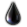
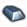
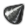
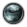

Production
This article is considered accurate for the current version of the game.
Production is how a country manufactures military equipment, consumer goods, infrastructure, and buildings.
Contents
Factories[edit]
There are three types of factories:
- Civilian Factories: Infrastructure, Buildings (including Repair). May also be used to trade Resources from other countries.
- Military Factories: Infantry/Artillery, Armor, and Aircraft.
- Naval Dockyards: Ships, Submarines and Convoys.
Each State is set to a Regiontype, which then decides the default number of Factory slots. Various National Foci increase the maximum Factory cap, and various Techs give percentage bonuses to how many Factories a state can have.
| Regiontype | Default number of slots | Example State |
|---|---|---|
| Megalopolis Region | 12 | Greater London Area |
| Metropolis Region | 10 | |
| Dense Urban Region | 8 | |
| Urban Region | 6 | Svealand |
| Sparse Urban Region | 5 | |
| Developed Rural Region | 4 | |
| Rural Region | 2 | |
| Pastoral Region | 1 | |
| Enclave | 0 | Gibraltar |
| Tiny Island | 0 | Gotland |
| Wasteland | 0 | Amazonas |
Each factory has a Factory Output of 10.
Production lines[edit]
Production is organized into production lines, each of which produces a single type of equipment at a time. Up to 15 factories may be assigned to a single production line.
Production Efficiency[edit]
Each Production Line has an efficiency value associated with it. The higher the efficiency, the faster the Production Line produces Equipment, up to a maximum value. Running the same Production Line continuously increases its Production Efficiency.
Changing a Production Line to a different type of Equipment reduces its efficiency depending on how drastic the change is. From least to most:
- -25%?: Different variant of the same model (e.g. Panzer III Ausf. F -> Panzer III Ausf. G)
- -50%: Different model of the same chassis (e.g. Panzer III -> StuG III)
- -75%?: Different chassis of the same family (e.g. Panzer III -> Panzer IV)
Ships under production can be converted into another variant for increased production time depending on how large the change is and how far into production the ship is.
Resources[edit]
Unlike previous games, resources cannot be stockpiled---they flow directly to production with any excess resources being effectively wasted.
Raw materials[edit]
All equipment requires a single "raw materials" resource to produce.
Strategic Resources[edit]
Some Equipment requires Resources to produce. Lacking sufficient Resources will slow the production of that Equipment.
There are six Strategic Resources.
| Icon | Resource | Required to produce Equipment |
|---|---|---|
|  | Oil | Planes Tanks Ships |
| Rubber | Planes Tanks Trucks | |
| Aluminum | Planes Support Equipment | |
|  | Steel | Guns Ships Tanks |
|  | Tungsten | Anti-tank Artillery Jet Planes |
|  | Chromium | Modern tanks Battleships Battlecruiser Carrier |
Equipment[edit]
Land divisions and air wings are not produced as atomic units. Instead, factories produce individual tanks, airplanes, and so forth. This equipment is then sent to fill out the country's land divisions and air wings. Unlike resources, equipment can be stockpiled.
| Equipment | Supplies |
|---|---|
| Anti-Air | Anti-air |
| Anti-Tank | Anti-tank |
| Artillery | Artillery |
| Infantry Equipment | Engineers |
| Light Tank | Light tank |
| Mechanized | Mechanized |
| Medium Tank | Medium tank |
| Support Equipment | Engineers Field hospital |
| Trucks | Field hospital |

{kind=link}
{kind=link}
{kind=link}
{kind=link}
{kind=link}
{kind=link}